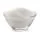
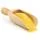
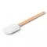
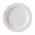
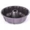

Um bolo de fubá de fofinho é uma ótima pedida para você que quer fazer uma receita simples para o lanche da tarde! Com saborzinho de
casa de vó, não tem nada melhor para acompanhar um café da tarde do que uma fatia de bolo de fubá quentinha recém-saída do forno.
Você pode comer ele puro ou combinado com uma calda de goiabada, deixando o gosto ainda mais delicioso. Perfeito para levar naquela
festa junina da família, o bolo de fubá vai agradar a todos e entra combina demais com o cardápio do arraiá. Essa receita é parte da
seleção que o TudoGostoso fez de comidas de festa junina para agilizar o seu cardápio. Feito com fubá no liquidificador, o bolo é
bem fácil de preparar e fica muito macio e molhadinho! É de dar água na boca! Veja como fazer essa delícia e tenha uma nova receita
de bolo favorita!
Ingredientes (18 porções)
2 ovos

2 xícaras de açúcar
2 xícaras de farinha de trigo
2 colheres (chá) de fermento em pó
2 xícaras de leite

2 xícaras de fubá
1 xícara de óleo
Materiais
Liquidificador

Espátula de Silicone

Prato de Sobremesa
Espátula para bolo

Forma de Bolo
Modo de preparo
Bata no liquidificador em velocidade alta, os ovos, o óleo, o leite e o açúcar.
Quando estiver homogêneo, vá acrescentando a farinha e o fubá.
A massa vai começar a ficar grossa, então ajude mexendo com uma colher.
Quando estiver tudo bem misturado acrescente o fermento em pó e misture bem.
Unte uma assadeira grande de buraco no meio com óleo e açúcar (de preferência cristal).
Leve ao forno médio até dourar (cerca de 40 minutos).
Espete um palito ou faca para ter certeza de estar assado.
Quando estiver quase totalmente frio pode desenformar.
Fica macio, não é um bolo de fubá seco e fica maravilhoso!